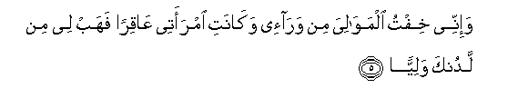

Sacred Texts Islam Index
Hypertext Qur'an Unicode Palmer Pickthall Yusuf Ali English Rodwell
Sūra XIX.: Maryam, or Mary. Index
Previous Next
The Holy Quran, tr. by Yusuf Ali, [1934], at sacred-texts.com
Sūra XIX.: Maryam, or Mary.
Section 1
1. Kāf. Hā. Yā. ‘Ain Ṣād.
2. Thikru rahmati rabbika AAabdahu zakariyya
2. (This is) a recital
Of the Mercy of thy Lord
To His servant Zakarīya.
3. Ith nada rabbahu nidaan khafiyyan
3. Behold! he cried
To his Lord in secret,
4. Qala rabbi innee wahana alAAathmu minnee waishtaAAala alrra/su shayban walam akun biduAAa-ika rabbi shaqiyyan
4. Praying: "O my Lord!
Infirm indeed are my bones,
And the hair of my head
Doth glisten with grey:
But never am I unblest,
O my Lord, in my prayer
To Thee!

5. Wa-innee khiftu almawaliya min wara-ee wakanati imraatee AAaqiran fahab lee min ladunka waliyyan
5. "Now I fear (what)
My relatives (and colleagues)
(Will do) after me:
But my wife is barren:
So give me an heir
As from Thyself,—
6. Yarithunee wayarithu min ali yaAAqooba waijAAalhu rabbi radiyyan
6. "(One that) will (truly)
"Represent me, and represent
The posterity of Jacob;
And make him, O my Lord!
One with whom Thou art
Well-pleased!"
7. Ya zakariyya inna nubashshiruka bighulamin ismuhu yahya lam najAAal lahu min qablu samiyyan
7. (His prayer was answered):
"O Zakarīya! We give thee
Good news of a son:
His name shall be Yaḥyā:
On none by that name
Have We conferred distinction before."
8. Qala rabbi anna yakoonu lee ghulamun wakanati imraatee AAaqiran waqad balaghtu mina alkibari AAitiyyan
8. He said: "O my Lord!
How shall I have a son,
When my wife is barren
And I have grown quite decrepit
From old age?"
9. Qala kathalika qala rabbuka huwa AAalayya hayyinun waqad khalaqtuka min qablu walam taku shay-an
9. He said: "So (it will be):
Thy Lord saith, "That is
Easy for Me: I did
Indeed create thee before,
When thou hadst been nothing!"
10. Qala rabbi ijAAal lee ayatan qala ayatuka alla tukallima alnnasa thalatha layalin sawiyyan
10. (Zakarīya) said: "O my Lord!
Give me a Sign."
"Thy Sign," was the answer,
"Shall be that thou
Shalt speak to no man
For three nights,
Although thou art not dumb."
11. Fakharaja AAala qawmihi mina almihrabi faawha ilayhim an sabbihoo bukratan waAAashiyyan
11. So Zakarīya came out
To his people
From his chamber:
He told them by signs
To celebrate God's praises
In the morning
And in the evening.
12. Ya yahya khuthi alkitaba biquwwatin waataynahu alhukma sabiyyan
12. (To his son came the command):
"O Yaḥyā! take hold
Of the Book with might":
And We gave him Wisdom
Even as a youth,
13. Wahananan min ladunna wazakatan wakana taqiyyan
13. And pity (for all creatures)
As from us, and purity:
He was devout,
14. Wabarran biwalidayhi walam yakun jabbaran AAasiyyan
14. And kind to his parents,
And he was not overbearing
Or rebellious.
15. Wasalamun AAalayhi yawma wulida wayawma yamootu wayawma yubAAathu hayyan
15. So Peace on him
The day he was born,
The day that he dies,
And the day that he
Will be raised up
To life (again)